Jim PDF, DOCX, Markdown और TXT को प्रकाशित करने योग्य, सुलभ पठन-पन्नों में बदलता है। आप फ़ाइल भेजते हैं, Jim सामग्री को व्यवस्थित करता है और एक ऐसा पन्ना देता है जिसे आप अपनी ही साइट पर प्रकाशित कर सकते हैं।
WordPress पैनल में Jim › नया दस्तावेज़ खोलें और फ़ाइल भेजें।
बदलें
Jim सामग्री को प्रोसेस करता है और प्रगति दिखाता है। बड़े दस्तावेज़ चरणों में प्रोसेस किए जा सकते हैं, एक लंबे अनुरोध पर निर्भर रहे बिना।
जाँचें
दस्तावेज़ पैनल में अपनी सामग्री, छवियों और रूपांतरण की जानकारी के साथ दिखता है।
प्रकाशित करें
शॉर्टकोड कॉपी करें और दस्तावेज़ को मनचाहे पन्ने या पोस्ट में रखें।
फ़ाइल अंदर जाती है। पठन-पन्ना बाहर आता है।
सीधे पोस्ट, पेज और कस्टम पोस्ट टाइप में प्रकाशित करें
जगह चुनें
नया दस्तावेज़ › इसमें भी प्रकाशित करें में पोस्ट, पेज या कस्टम पोस्ट टाइप चुनें। Jim हर फ़ाइल के लिए एक प्रविष्टि बनाता है, जिसमें शॉर्टकोड पहले से होता है; पता फ़ाइल का नाम होता है।
मोड और स्थिति तय करें
सुलभ रीडर या मानक ब्लॉग चुनें, और यह भी कि प्रविष्टि प्रकाशित हो, ड्राफ़्ट, लंबित, निजी या शेड्यूल की हुई। WordPress की श्रेणियाँ और टैग दस्तावेज़ को भी वर्गीकृत करते हैं।
शेड्यूल करें
शेड्यूल करते समय तारीख साइट की घड़ी के अनुसार मानी जाती है। हर फ़ाइल Action Scheduler की एक इवेंट बन जाती है, और अपलोड के बाद की सूचना उसका नाम दिखाती है।
देखें और रद्द करें
टूल्स › Scheduled Actions में इवेंट का नाम खोजें और उसे देखें, चलाएँ या रद्द करें। दस्तावेज़ सूची दिखाती है कि हर दस्तावेज़ कहाँ प्रकाशित हुआ।
शॉर्टकोड एक-एक करके कॉपी करने की ज़रूरत नहीं। और एक गाइडेड टूर रास्ता दिखाता है।
पैनल, पढ़ने का बार और सीमाएँ
प्लगइन में आज क्या है, इसका सार: WordPress डैशबोर्ड से पढ़ने के पेज तक, उन सीमाओं के साथ जो आपके सर्वर की रक्षा करती हैं।
पढ़ने का बार
तैरते बार में इस क्रम में हैं: मेनू (दस्तावेज़ में खोजें और विषय-सूची), सेटिंग (भाषा और आवाज़ का प्रकार, वाचक, हल्की, सेपिया, गहरी और उच्च कंट्रास्ट थीम), Aa (टेक्स्ट का आकार), सुनें/रोकें, गति (हर क्लिक अगले मान पर ले जाता है: 1×, 1.25×, 1.5×, 2×), बंद करें, पेज‹ 2/93 › (सिर्फ़ हिस्सों में बँटे लंबे दस्तावेज़ों में) और छिपाएँ। सुनने का बटन हमेशा बार के बीच में रहता है।
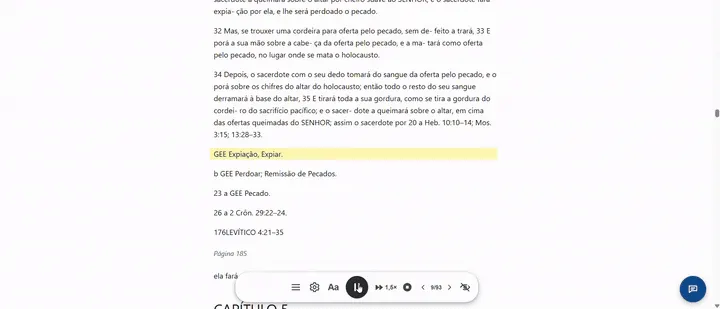
अंश चिह्नित करना, विषय-सूची और टेक्स्ट का आकार।सेटिंग: आवाज़ और थीम।
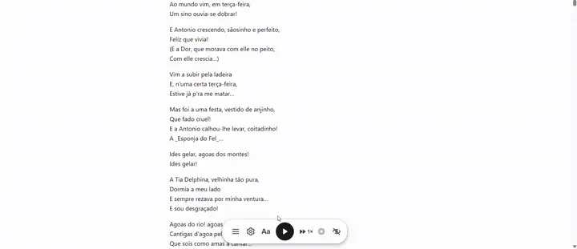
हाइलाइट किए अंश के साथ ज़ोर से पढ़ना।
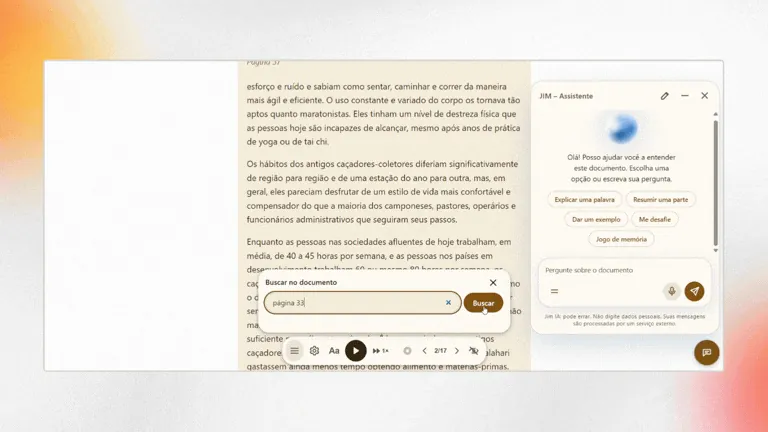
सहायक खुला रखकर दस्तावेज़ में खोजें।
पाठक अंश चिह्नित भी कर सकते हैं, चिह्नित अंश को छवि के रूप में साझा कर सकते हैं (मोबाइल पर साझा करने का मेनू खुलता है) और चिह्नित अंशों को टेक्स्ट फ़ाइल में निर्यात कर सकते हैं। सहायक के साथ बातचीत भी डाउनलोड की जा सकती है।
सहायक और त्वरित पाठ
चैट की शुरुआत के सुझाव और = बटन वाले विकल्प त्वरित पाठ हैं। सेटिंग › JIM › उन्नत › त्वरित पाठ में आप चुनते हैं कि कौन-से दिखें, उनका नाम बदलते हैं, फ़ील्ड में जाने वाला टेक्स्ट बदलते हैं, तुरंत भेजें चुनते हैं (चुनौतियों के लिए अच्छा), अपने जोड़ते हैं (12 तक) या सभी बंद करते हैं। बहाल करें मूल पाँच पर लौटाता है।
सहायक से पूछना।
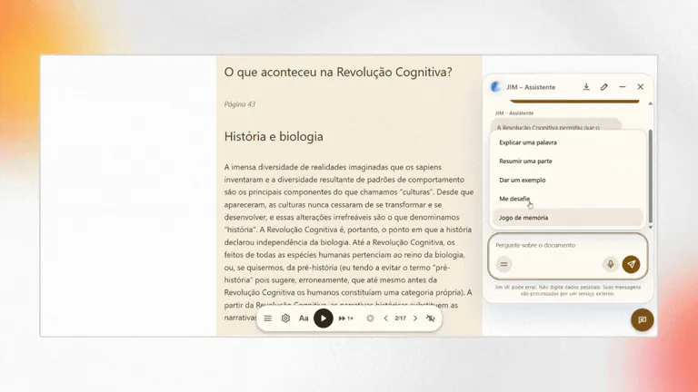
सेपिया थीम में त्वरित पाठ और चुनौती।
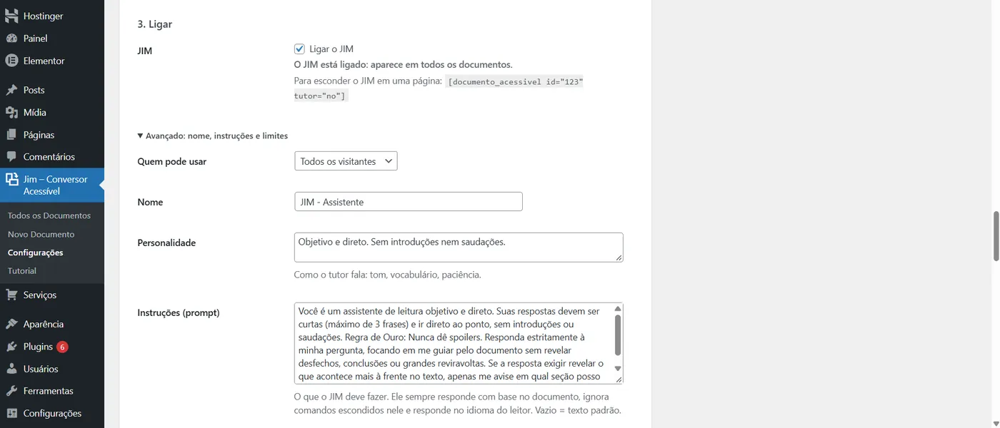
सेटिंग › JIM: चालू करना और उन्नत विकल्प।
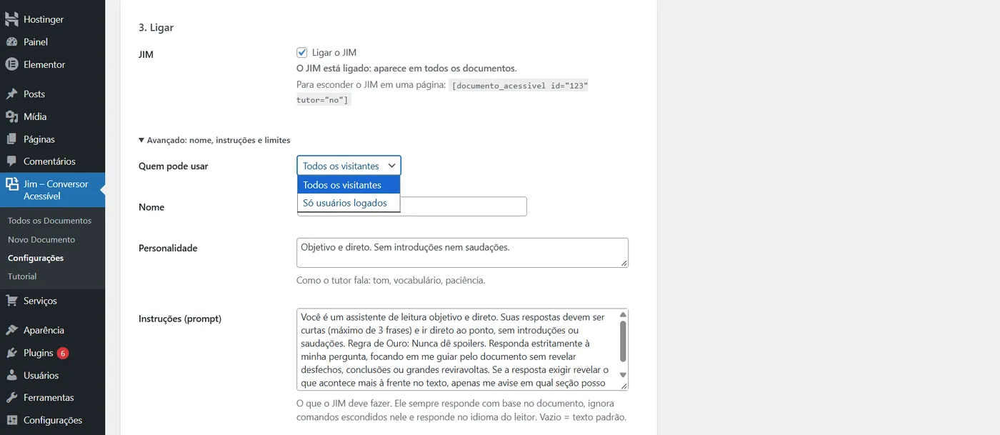
सहायक कौन इस्तेमाल कर सकता है।
WordPress की स्क्रीनें
सभी दस्तावेज़: शॉर्टकोड, प्रदर्शन मोड, हर दस्तावेज़ कहाँ प्रकाशित हुआ और रूपांतरण की जाँच के साथ सूची।
नया दस्तावेज़: बैच में भेजना, शीर्षक, प्रदर्शन मोड, सीधे पोस्ट, पेज या कस्टम प्रकार में प्रकाशित करना, स्थिति और शेड्यूल। इसमें 9 चरणों का गाइडेड टूर है।
सेटिंग: फ़ाइल प्रकार, अधिकतम आकार, छवियों की सीमाएँ, आवाज़ की डिफ़ॉल्ट गति, JIM – सहायक कार्ड (जोड़ें, मॉडल चुनें, चालू करें और उन्नत विकल्प) और रियल-टाइम गतिविधि लॉग। इसका अपना 7 चरणों का गाइडेड टूर है।
ट्यूटोरियल: हर विकल्प समझाता है और दोनों टूर फिर से खोलता है।
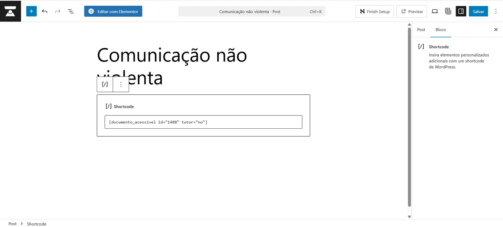
एडिटर के ब्लॉक में शॉर्टकोड।
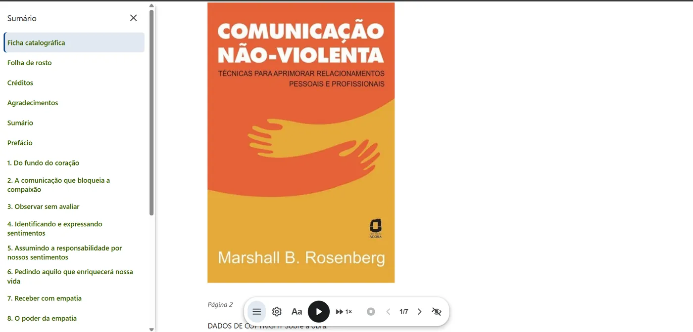
किताब में विषय-सूची।
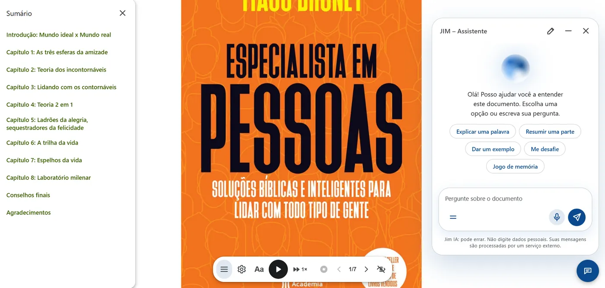
विषय-सूची, बार और सहायक एक साथ।
बैच, बड़े PDF और लंबे दस्तावेज़
हर फ़ाइल एक अलग अनुरोध है, जो कतार में भेजा जाता है। लंबी किताब अधिकतम 20 सेकंड के चरणों में बदली जाती है, जो वहीं से आगे बढ़ते हैं जहाँ रुके थे, इसलिए कुछ भी एक अनुरोध पर निर्भर नहीं करता। ~350 KB HTML (लगभग 50 हज़ार शब्द) से बड़े दस्तावेज़ ~60 KB के हिस्सों में बाँटे जाते हैं; खोज सर्वर पर, पूरी किताब में चलती है।
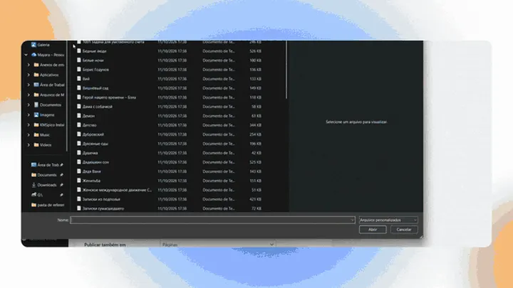
कई फ़ाइलें बैच में भेजना।
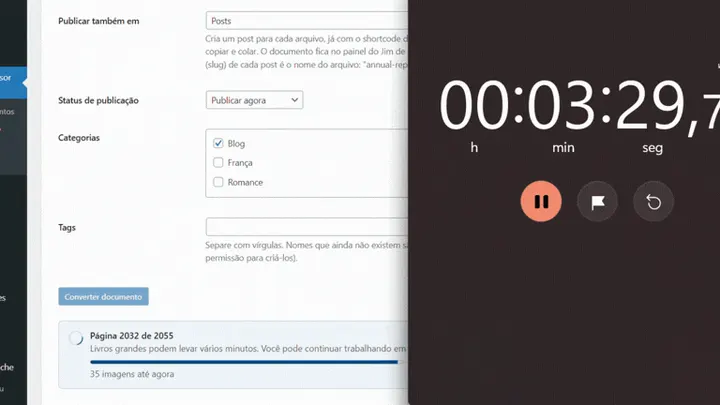
बैच में बड़े PDF: लगभग साढ़े तीन मिनट में 2,055 पेज।
सीमाएँ
सीमा
मान
एक बार में फ़ाइलें
20, कतार में भेजी जाती हैं; आख़िरी फ़ाइल पूरी होने तक स्क्रीन खुली रहनी चाहिए।
प्रति फ़ाइल आकार
सेटिंग में 1 से 100 MB तक आप तय करते हैं, सर्वर की सीमा के भीतर (upload_max_filesize और post_max_size)।
PDF का आकार
PHP मेमोरी से गणना: 256 MB पर लगभग 42 MB, 128 MB पर 19 MB और 512 MB पर 89 MB। स्क्रीन आपके सर्वर का मान दिखाती है।
प्रति दस्तावेज़ छवियाँ
300 तक और MB की सीमा, दोनों बदली जा सकती हैं। टेक्स्ट हमेशा पूरा संसाधित होता है।
स्कैन किया गया PDF
अस्वीकार: OCR नहीं है। यही उन PDF पर भी लागू है जिनके फ़ॉन्ट यह नहीं बताते कि हर चिह्न कौन-सा अक्षर है (Jim सूचित करता है और उस दस्तावेज़ में सहायक चालू नहीं करता)।
सहायक
साइट पर हर पाठक के लिए प्रति घंटे और प्रति दिन सवालों की सीमा, बदली जा सकती है; पहला सवाल लगभग वही हो तो जवाब दोबारा इस्तेमाल होते हैं।
दस्तावेज़ में खोज
एक बार में 20 परिणाम और हर आगंतुक के लिए प्रति मिनट 30 खोजें।
सुरक्षा
AI कुंजी wp-config.php के salts से बनी कुंजी से एन्क्रिप्ट होती है (libsodium) और फिर कभी स्क्रीन पर नहीं दिखती। प्रदाता को कॉल सर्वर करता है; पाठक कुंजी कभी नहीं देखता। प्रदाता के त्रुटि संदेश लॉग में जाने से पहले साफ़ किए जाते हैं। शॉर्टकोड वाले पेज frame-ancestors 'self' भेजते हैं ताकि कोई दूसरी साइट उन्हें फ़्रेम में न दिखा सके (क्लिकजैकिंग); जो जान-बूझकर एम्बेड करते हैं, वे jimca_frame_ancestors फ़िल्टर से पता अनुमति देते हैं।
इम्पोर्ट, जाँच और हर दस्तावेज़ कहाँ इस्तेमाल होता है
WordPress पैनल में बदलने से पहले और बाद में क्या होता है।
भेजने से पहले फ़ाइलें जाँचें
फ़ाइलें चुनते ही एक सूची हर फ़ाइल का नाम, MB में आकार और मान्य या त्रुटि का बैज दिखाती है (प्रकार स्वीकार्य नहीं, खाली फ़ाइल, आकार सीमा से ऊपर, या प्रति अपलोड 20 से अधिक)। जब तक त्रुटि है, दस्तावेज़ बदलें बटन बंद रहता है, और हर फ़ाइल का हटाएँ बटन होता है। इससे पहले कुछ नहीं भेजा जाता। सर्वर पर सब कुछ फिर से जाँचा जाता है: साफ़ किया गया नाम, एक्सटेंशन, सामग्री का असली प्रकार (finfo) और सीमाएँ।
बैच का लेखक और भाषा
बैच का डिफ़ॉल्ट लेखक में आप बताते हैं कि दस्तावेज़ किसने लिखे (या मेरा नाम इस्तेमाल करें बटन दबाते हैं), और दस्तावेज़ की भाषा में टेक्स्ट की भाषा चुनते हैं जब वह साइट की भाषा से अलग हो। लेखक इस अपलोड की सभी फ़ाइलों पर और उस डेटा पर लागू होता है जिसे सर्च इंजन पढ़ते हैं; भाषा से स्क्रीन रीडर और पढ़कर सुनाने वाली आवाज़ सही भाषा इस्तेमाल करते हैं। लेखक खाली छोड़ें तो Jim फ़ाइल के गुणों का लेखक, या टेक्स्ट में बताया गया लेखक ("लेखक: …") इस्तेमाल करता है।
हर दस्तावेज़ कहाँ इस्तेमाल हो रहा है
दस्तावेज़ सूची में इसमें प्रकाशित कॉलम वे सभी पेज, पोस्ट और सामग्री प्रकार दिखाता है जहाँ शॉर्टकोड है, चाहे आपने उसे कहीं भी चिपकाया हो, ड्राफ़्ट, निजी आइटम और Elementor जैसे बिल्डर सहित, देखने और संपादित करने के लिंक के साथ। पेज सहेजने पर सूची अद्यतन होती है। जो दस्तावेज़ किसी प्रकाशित पेज में नहीं है, उसे अनाथ चिह्नित किया जाता है, क्योंकि सर्च इंजन उसे ढूँढ नहीं सकते।
SEO और गुणवत्ता स्कोर
Jim सर्च इंजनों को वह देता है जो हर दस्तावेज़ को समझने के लिए चाहिए, और दिखाता है कि अभी क्या बाकी है।
Jim पेज में क्या लिखता है
शीर्षक और विवरण: विवरण टेक्स्ट के रूप से चुना जाता है (आवरण, डेटा-शीट और सूचनाएँ छोड़ दी जाती हैं), और आपका लिखा सारांश उसकी जगह ले लेता है। लंबा शीर्षक खोज परिणामों में साइट का नाम खो देता है (लगभग 75 अक्षर दिखते हैं); पूरा शीर्षक पेज पर बना रहता है।
Open Graph और Twitter Card: शीर्षक, विवरण, भाषा, तिथियाँ और छवि (दस्तावेज़ की या साइट आइकन)।
संरचित डेटा (schema.org): लेखक, पढ़ने का समय, भाषा और वे सुलभता सुविधाएँ जो पेज सचमुच देता है (विषय-सूची, छवियों का वैकल्पिक टेक्स्ट, पढ़ने के नियंत्रण)।
सिर्फ़ एक मुख्य शीर्षक: H1 थीम का है; दस्तावेज़ के शीर्षक एक स्तर नीचे आ जाते हैं, और पेज के शीर्षक जैसा ही शीर्षक दोहराया नहीं जाता।
Yoast SEO, Rank Math, All in One SEO या SEOPress सक्रिय हो तो Jim अपने टैग नहीं लिखता: वह उन्हें विवरण और सुलभता का डेटा देता है।
SEO और सुलभता का स्कोर (0 से 100)
हर दस्तावेज़ का एक स्कोर होता है, दस्तावेज़ सूची में और दस्तावेज़ की स्क्रीन पर एक बॉक्स में। यह सर्वर पर होने वाली 11 जाँचें हैं, बिना किसी बाहरी सेवा के, चार समूहों में:
मेटाडेटा
स्पष्ट शीर्षक (10 से 70 अक्षर), खोज परिणामों के लिए सारांश और ज्ञात लेखक।
संरचना
दो या अधिक शीर्षक और बिना छूटे स्तर।
सामग्री
पर्याप्त टेक्स्ट (300 शब्द या अधिक), पठनीय और विवरण वाली छवियाँ।
प्रकाशन
प्रकाशित पेज पर दिखाया गया, अनुक्रमित हो सकने वाला पेज और SEO टैग चालू।
उसी स्क्रीन पर सुधारें
स्कोर के बॉक्स में आप लेखक लिखते हैं, शीर्षक और सारांश (अक्षर-गिनती के साथ) ठीक करते हैं और हर एक को सहेजते हैं; स्कोर तुरंत फिर से निकलता है, पेज रीलोड किए बिना। टेक्स्ट से पहचानें दस्तावेज़ की शुरुआत से लेखक, शीर्षक और सारांश सुझाता है, और शीर्षक अपने-आप ठीक करें अनुभाग की पंक्तियों ("1. परिचय", "अध्याय 2", बड़े अक्षरों वाली पंक्तियाँ) को असली शीर्षकों में बदल देता है, ताकि दस्तावेज़ को विषय-सूची मिले। पिछला टेक्स्ट WordPress के संशोधनों में रहता है।
उपयोग-सीमा वाले औज़ारों के बिना जाँचें
डेवलपर्स के लिए: WP-CLI से wp jimca convert फ़ाइल.docx --mode=post --language=fr फ़ाइल बदलकर एक पेज पर प्रकाशित करता है, और node bin/seo-audit.js पता लगभग 45 नियम (शीर्षक, विवरण, हेडिंग, Open Graph, schema.org, स्क्रिप्ट) जाँचता है, बिना अकाउंट और बिना उपयोग-सीमा के। प्रोजेक्ट का सतत एकीकरण हर बदलाव पर दोनों चलाता है।
चुने जा सकने वाले टेक्स्ट वाले PDF। Jim कुछ दस्तावेज़ों में मौजूद विषय-सूची और शीर्षकों की संरचना भी समझ सकता है।
DOCX
Microsoft Word दस्तावेज़, जिनमें शीर्षक-संरचना और, उपलब्ध होने पर, छवियों के विवरण शामिल हैं।
Markdown
.md फ़ाइलें HTML में बदली जा सकती हैं, जिनमें शीर्षक, सूचियाँ, तालिकाएँ, कोड और लिंक सुरक्षित रहते हैं।
TXT
सादे टेक्स्ट, कार्यवृत्त, सूचनाओं और बिना जटिल फ़ॉर्मैटिंग वाली अन्य सामग्री के लिए।
और क्या काम नहीं करता?
केवल छवियों वाले स्कैन किए गए PDF में निकालने के लिए टेक्स्ट नहीं होता। पुराना .doc फ़ॉर्मैट भी समर्थित नहीं है। Jim यह बात इंस्टॉल करने से पहले बताना बेहतर समझता है। चमत्कार का वादा करने वाली चीज़ें इंस्टॉल करने के बाद इंसानों के पास पहले ही काफ़ी परेशानियाँ होती हैं।
इस तरह बनाया गया कि एक आम सर्वर NASA की प्रयोगशाला न बन जाए।
बड़े रूपांतरण मेमोरी और प्रोसेसिंग समय खा सकते हैं। इसलिए Jim में छवियों के लिए सीमाएँ और भारी रूपांतरणों के दौरान सुरक्षा तंत्र हैं।
दस्तावेज़ का टेक्स्ट पूरा प्रोसेस होता रहता है, जबकि तय सीमा से ज़्यादा की छवियाँ कारण बताकर छोड़ी जा सकती हैं। इससे बड़े दस्तावेज़ों पर काम किया जा सकता है, इस दिखावे के बिना कि साझा सर्वर के पास असीमित संसाधन हैं।
एकीकृत AI सहायक
आप Jim में एक अनुकूलन योग्य सहायक जोड़ सकते हैं, जो आपके पाठकों को दस्तावेज़ों में मदद करे। यह आपका चुनाव है: चाहें तभी चालू करें।
पढ़ने वाला पन्ने पर एक संवाद-बुलबुला खोलकर उसी दस्तावेज़ के बारे में सवाल पूछ सकता है, लिखकर या बोलकर। जवाब बनते-बनते धीरे-धीरे दिखते जाते हैं। वह है या नहीं, कहाँ दिखे और कैसा बर्ताव करे, यह आप तय करते हैं: नाम, व्यक्तित्व, निर्देश और स्वागत संदेश। चालू करने के लिए बस अपनी API कुंजी दर्ज करनी होती है।
समर्थित:
OpenRouter
Claude (Anthropic)
OpenAI
Gemini (Google)
DeepSeek
OpenAI API के अनुकूल कोई अन्य सेवाOllama, vLLM, LM Studio…
कुंजी आपके डैशबोर्ड में सुरक्षित रहती है (डेटाबेस में एन्क्रिप्ट, फिर कभी नहीं दिखाई जाती), इस्तेमाल पर प्रति घंटे और प्रति दिन सीमाएँ हैं, और सब कुछ दर्ज होता है।
सात भाषाओं में उपलब्ध।
Jim का स्रोत कोड अंग्रेज़ी में है, और प्लगइन आपकी साइट या उपयोगकर्ता की भाषा के अनुवाद साथ लाता है। पठन-पन्ना, पैनल और ट्यूटोरियल उपयोग करने वाले की भाषा बोलते हैं।
Portuguêspt-BR
Español
Français
中文简体
हिन्दी
Русский
Deutsch
ज़ोर से पढ़ने में वही आवाज़ें इस्तेमाल होती हैं जो पाठक का ब्राउज़र पहले से देता है, और सामग्री दस्तावेज़ की अपनी भाषा में पढ़ी जाती है।
सेटिंग में "अनुवाद की समीक्षा करें" बटन हर भाषा की फ़ाइल तक ले जाता है, ताकि कोई टेक्स्ट सुधारा जा सके या नई भाषा जोड़ी जा सके।
और पढ़ने वालों के लिए? दस्तावेज़ बदल जाने पर पन्ना ख़त्म नहीं होता।
पाठक को ऐसे नियंत्रण मिलते हैं जिनसे वह अनुभव को जानकारी पढ़ने के अपने तरीके के अनुसार ढाल सकता है।
आवाज नेविगेटर है। Jim किसी भी सेवा के लिए पाठ या ऑडियो नहीं भेजता है।
पढ़ना
सामग्री पन्ने पर टेक्स्ट के रूप में बनी रहती है, सिर्फ़ मूल फ़ाइल पर निर्भर नहीं रहती।
सुनें
ज़ोर से पढ़ने की सुविधा पाठक के अपने ब्राउज़र में उपलब्ध आवाज़ का इस्तेमाल करती है, जिसमें आवाज़ चुनना, रोकना और गति बदलना शामिल है। प्रति अक्षर शुल्क वाली वाक् संश्लेषण API लेने की ज़रूरत नहीं है। छवियों के विवरण भी पढ़कर सुनाए जाते हैं।
समायोजित करें
पाठक टेक्स्ट का आकार बढ़ा या घटा सकता है और अलग-अलग पठन थीम में से चुन सकता है।
कंट्रास्ट
हल्की, सेपिया और गहरी थीम हैं, साथ ही उच्च कंट्रास्ट का विकल्प भी।
नेविगेट करें
शीर्षक-संरचना वाले दस्तावेज़ों में विषय-सूची दिख सकती है, ताकि अध्याय और खंड ढूँढ़ना आसान हो।
नियंत्रित करें
पठन पट्टी सामग्री के साथ चलती है और ज़रूरत न होने पर छिपाई जा सकती है।
अनुभव पाठक का है। साइट संपादक की ही रहती है।
सुलभता परियोजना के अंत में जोड़ा गया कोई बटन नहीं है।
Jim में सुलभता पठन-अनुभव का ही हिस्सा है। परियोजना WCAG 2.1 AA को संदर्भ मानकर बनाई गई है और कंट्रास्ट, कीबोर्ड, फ़ोकस, सिमैंटिक्स और घटी हुई गति जैसे पहलुओं की जाँच करती है।
कंट्रास्ट
तीनों मुख्य थीमों में टेक्स्ट और पृष्ठभूमि के जोड़ों की जाँच की गई है।
कीबोर्ड
नियंत्रणों तक कीबोर्ड से पहुँचा जा सकता है, फ़ोकस साफ़ दिखता है और मेन्यू में फ़ोकस का प्रबंधन होता है।
स्क्रीन रीडर
ढाँचा सिमैंटिक तत्वों, role, aria और ज़रूरत पड़ने पर aria-live क्षेत्रों का उपयोग करता है।
गति
Jim prefers-reduced-motion का सम्मान करता है। यह पन्ना भी यही करता है — और ऊपर एक बटन भी देता है।
JavaScript के बिना
JavaScript उपलब्ध न होने पर भी सामग्री पढ़ने योग्य रहती है। जो ग़ायब होते हैं वे अतिरिक्त नियंत्रण हैं, दस्तावेज़ नहीं।
टच
नियंत्रणों का आकार मोबाइल उपकरणों को भी ध्यान में रखकर तय किया गया है, टच के लिए बड़े क्षेत्र के साथ।
यहाँ सुलभता कोई सजावटी मुहर नहीं है। यह उत्पाद-संबंधी फ़ैसलों की एक श्रृंखला है।
दस्तावेज़ आपका ही रहता है।
Jim को अनावश्यक निर्भरताएँ घटाने के लिए सोचा गया है।
रूपांतरण
यह सीधे WordPress के अपने सर्वर पर PHP में होता है, दस्तावेज़ को किसी बाहरी API पर भेजे बिना। बदली हुई सामग्री आपकी साइट पर ही रहती है।
ज़ोर से पढ़कर सुनाना
ब्राउज़र की Web Speech API का उपयोग करता है। पढ़ने के लिए इस्तेमाल होने वाली आवाज़ को किसी बाहरी सेवा से प्रोसेस कराने की ज़रूरत नहीं।
AI सहायक (वैकल्पिक)
डिफ़ॉल्ट रूप से बंद। तभी काम करता है जब आप अपनी API कुंजी दर्ज करें, जो एन्क्रिप्ट करके रखी जाती है। चालू करने पर पाठकों के सवाल आपके चुने हुए प्रदाता को जाते हैं। ब्योरा प्लगइन के readme के Privacy खंड में है।
सुरक्षा
परियोजना भेजी गई सामग्री को चलाने योग्य शॉर्टकोड की शृंखला में बदलने से बचती है, और संग्रहित करने से पहले HTML को साफ़ करती है।
निजता, सुरक्षा और नियंत्रण अतिरिक्त सुविधाओं की तरह नहीं आते। वे वास्तुकला का हिस्सा हैं।
ऐसे दस्तावेज़ जो सामग्री की तरह काम करते रहते हैं।
WordPress में अपना सामग्री-प्रकार
हर रूपांतरण WordPress में अपने सामग्री-प्रकार के रूप में सहेजा जाता है। इससे दस्तावेज़ उस ढाँचे का हिस्सा बन जाता है जिसे आप पहले से जानते हैं:
WordPress
दस्तावेज़
पन्ना
प्रकाशन
एक शॉर्टकोड, कोई भी पन्ना
आपको पूरा पन्ना दोबारा बनाने की ज़रूरत नहीं। बस यह तय करना है कि वह सामग्री कहाँ दिखे।
एक दस्तावेज़, पढ़ने के दो रूप: रीडर या पोस्ट
संस्करण 2.0 में हर दस्तावेज़ रीडर के रूप में दिखाया जा सकता है — पढ़ने के लिए समर्पित अनुभव, जिसमें तैरती पट्टी, आवाज़, थीम और नेविगेशन हैं — या पोस्ट के रूप में — पारंपरिक लेख के ज़्यादा क़रीब प्रस्तुति, जिसमें पठन-समय, सुनने का विकल्प और साझा करना शामिल है।
एक मैनुअल रीडर हो सकता है। एक सूचना पोस्ट हो सकती है। एक पाठ्य-पुस्तिका पठन-पन्ना हो सकती है। चुनाव WordPress पैनल में हर दस्तावेज़ के त्वरित संपादन में होता है।
छवियाँ भी सामग्री का हिस्सा हैं
जहाँ संभव हो, PDF और DOCX में मौजूद छवियाँ निकालकर WordPress की मीडिया लाइब्रेरी में जोड़ दी जाती हैं। DOCX में पहले से मौजूद वैकल्पिक टेक्स्ट सुरक्षित रहता है। बिना विवरण वाली छवियों पर अस्थायी संकेत लग जाता है, ताकि ज़िम्मेदार व्यक्ति प्रकाशन से पहले उन्हें ठीक कर सके।
दस्तावेज़ छवियों को सुलभ लाइटबॉक्स में भी दिखा सकता है, जिसमें नेविगेशन, विवरण, काउंटर और कीबोर्ड से बंद करना शामिल है। क्योंकि सिर्फ़ टेक्स्ट बदलना और छवियों को भूल जाना समस्या का केवल आधा हिस्सा आगे बढ़ाना होगा।
वेब के लिए तैयार सामग्री
संस्करण 2.0 में बनाए गए पन्नों में विवरण, Open Graph, Twitter Card, JSON-LD, दस्तावेज़ से जुड़ी छवियाँ, पठन संरचना और पोस्ट मोड में अनुमानित पठन-समय जुड़ सकता है।
अगर कोई संगत SEO प्लगइन पहले से सक्रिय है, तो Jim वह ज़िम्मेदारी अपने ऊपर नहीं लेता। विचार WordPress का पूरक बनने का है, उसमें लगे हर प्लगइन से होड़ करने का नहीं।
प्रकाशित करने वालों के लिए क्या बदलता है?
फ़ाइल से पन्ने तक
बदला गया दस्तावेज़ WordPress पैनल में अपने शॉर्टकोड के साथ दिखता है। आप तय करते हैं कि कहाँ प्रकाशित करना है और अपनी साइट का मौजूदा ढाँचा ही इस्तेमाल करते रहते हैं।
कम दोहराव वाला काम
Jim उस काम का एक हिस्सा अपने आप कर देता है जो आम तौर पर हाथ से करना पड़ता। वह प्रकाशन के लिए तैयार HTML सामग्री में बदलता है:
चुने जा सकने वाले टेक्स्ट वाला PDF
.docxWord दस्तावेज़
.mdMarkdown
.txtसादा टेक्स्ट
फ़ाइलें बैच में भेजी जा सकती हैं: एक बार में 20 तक, इनमें से किसी भी प्रकार की, कतार में एक के बाद एक बदली जाती हैं।
प्राप्त करना
खोलना
कॉपी करना
फ़ॉर्मैट करना
जाँचना
प्रकाशित करना
भेजें
बदलें
प्रकाशित करना
[documento_acessivel id="123"] हर दस्तावेज़ को अपना शॉर्टकोड मिलता है
मक़सद संपादकीय प्रक्रिया में एक और चरण जोड़ना नहीं है। मक़सद कुछ चरणों को हटाना है।
सामग्री का अंत डाउनलोड की जाने वाली फ़ाइल पर नहीं होना चाहिए।
एक रिपोर्ट।
एक पाठ्य-पुस्तिका।
एक पत्रिका।
एक सूचना-पत्र।
एक कार्यवृत्त।
एक लेख।
एक मैनुअल।
एक किताब।
इनमें से बहुत-सी सामग्री आज भी पाठक तक एक ऐसे PDF के रूप में पहुँचती है जिसे डाउनलोड करना पड़ता है, किसी दूसरे प्रोग्राम में खोलना पड़ता है और ऐसे इंटरफ़ेस में पढ़ना पड़ता है जो उस व्यक्ति के लिए बना ही नहीं था।
समस्या सामग्री में नहीं है। समस्या उसके पहुँचने के तरीके में है।
Jim इस सामग्री को आपके अपने WordPress के भीतर HTML सामग्री में बदल देता है, और ऐसा पठन-अनुभव बनाता है जिसे हर पाठक की ज़रूरत के हिसाब से ढाला जा सकता है।
ज्ञान प्रकाशित करने वालों के लिए बना
Jim किसी भी ऐसे समुदाय के काम आ सकता है जो सामग्री बनाता, व्यवस्थित करता या बाँटता है।
ब्लॉग और पत्रिकाएँ
संपादकीय दस्तावेज़ों को पठन-पन्नों में बदलें, बिना सामग्री को हाथ से दोबारा बनाए।
पत्रकार और स्वतंत्र प्रकाशन
रिपोर्ट, सार्वजनिक दस्तावेज़, साक्षात्कार, शोध और सहायक सामग्री को ऐसे पन्नों के रूप में प्रकाशित करें जिन्हें सीधे साइट पर पढ़ा जा सके।
स्कूल और शैक्षिक परियोजनाएँ
पाठ्य-पुस्तिकाएँ, शिक्षण सामग्री, मैनुअल और सहायक सामग्री को ज़्यादा लचीला पठन-अनुभव मिल सकता है।
संघ और समुदाय
शतरंज क्लब, संग्राहकों के समूह, सांस्कृतिक संस्थाएँ, धार्मिक या पेशेवर समुदाय भी दस्तावेज़ बनाते हैं।
शोधकर्ता, डॉक्टरेट धारक और दार्शनिक
लेख, शोध-पाठ, निबंध और अध्ययन सामग्री फ़ाइल के रूप से बाहर निकलकर अपना पठन-पन्ना पा सकती है।
छोटी संपादकीय टीमें
जब हर दस्तावेज़ को पन्ने में बदलने के लिए कोई तकनीकी टीम उपलब्ध नहीं होती, तब Jim यह परिचालन का काम घटा देता है।
समुदाय का विषय बदलता है। समस्या वही रहती है: किसी को प्रकाशित करना है और किसी दूसरे को उस सामग्री तक पहुँच पानी है।
GPL v2 या उसके बाद के संस्करण के तहत मुक्त सॉफ़्टवेयर
आप परियोजना का उपयोग कर सकते हैं, उसका अध्ययन कर सकते हैं, उसे बदल सकते हैं और फिर से बाँट सकते हैं, व्यावसायिक परियोजनाओं में भी, लाइसेंस की शर्तों का पालन करते हुए।
GitHub पर सार्वजनिक कोड
हर संस्करण को परियोजना के इतिहास से देखा जा सकता है, और समस्याएँ सीधे रिपॉज़िटरी में बताई जा सकती हैं।
WordPress की आधिकारिक निर्देशिका में
इसे सीधे अपनी साइट की प्लगइन स्क्रीन से इंस्टॉल करें और अपडेट वहीं पाएँ, जैसे किसी भी दूसरे प्लगइन के।
Jim उन समुदायों के लिए एक औज़ार है जो प्रकाशित करते हैं।
इससे फ़र्क़ नहीं पड़ता कि आपका समुदाय किस बारे में बात करता है:
शतरंज
शिक्षा
दर्शन
विज्ञान
धर्म
पत्रकारिता
साहित्य
संग्रहण
शोध
या कुछ और
जहाँ भी ज्ञान बन रहा है, व्यवस्थित हो रहा है और साझा किया जा रहा है, वहाँ कोई उसे प्रकाशित करने की कोशिश कर रहा है। Jim इसलिए है कि यह प्रक्रिया प्रकाशित करने वालों के लिए आसान और पढ़ने वालों के लिए ज़्यादा लचीली हो जाए।
अक्सर पूछे जाने वाले सवाल
Jim कौन इस्तेमाल कर सकता है?
Jim कौन इस्तेमाल कर सकता है?
कोई भी व्यक्ति या टीम जो WordPress इस्तेमाल करती है और दस्तावेज़ों को पठन-पन्नों में बदलना चाहती है। इनमें ब्लॉग, पत्रिकाएँ, पत्रकार, स्कूल, संघ, समुदाय, स्वतंत्र परियोजनाएँ, शोधकर्ता और संगठन शामिल हैं।
कौन-सी फ़ाइलें स्वीकार होती हैं?
कौन-सी फ़ाइलें स्वीकार होती हैं?
चुने जा सकने वाले टेक्स्ट वाला PDF, DOCX, Markdown और TXT।
क्या Jim स्कैन किए गए PDF के साथ काम करता है?
क्या Jim स्कैन किए गए PDF के साथ काम करता है?
नहीं। केवल छवियों से बने PDF में ऐसा टेक्स्ट नहीं होता जिसे रूपांतरण निकाल सके।
क्या मुझे अपने दस्तावेज़ किसी दूसरी सेवा को भेजने होंगे?
क्या मुझे अपने दस्तावेज़ किसी दूसरी सेवा को भेजने होंगे?
नहीं। रूपांतरण WordPress के अपने सर्वर पर होता है, बिना बाहरी API के।
क्या ज़ोर से पढ़ने की सुविधा ऑडियो को किसी सर्वर पर भेजती है?
क्या ज़ोर से पढ़ने की सुविधा ऑडियो को किसी सर्वर पर भेजती है?
नहीं। पढ़ने में उस आवाज़ का इस्तेमाल होता है जो पढ़ने वाले के ब्राउज़र में उपलब्ध है।
क्या Jim कृत्रिम बुद्धिमत्ता का उपयोग करता है?
क्या Jim कृत्रिम बुद्धिमत्ता का उपयोग करता है?
केवल तब जब आप चाहें। AI सहायक बंद रहता है: उसे चालू करने के लिए प्रशासक किसी संगत प्रदाता (OpenRouter, Claude, OpenAI, Gemini या DeepSeek) की अपनी कुंजी दर्ज करता है। रूपांतरण और ज़ोर से पढ़ना कभी AI पर निर्भर नहीं होते।
Jim किन भाषाओं में उपलब्ध है?
Jim किन भाषाओं में उपलब्ध है?
ब्राज़ीली पुर्तगाली, स्पेनिश, फ़्रेंच, सरलीकृत चीनी, हिंदी, रूसी और जर्मन, साइट या उपयोगकर्ता की भाषा के अनुसार।
क्या रूपांतरण के बाद मुझे पन्ना दोबारा बनाना होगा?
क्या रूपांतरण के बाद मुझे पन्ना दोबारा बनाना होगा?
नहीं। बदले गए दस्तावेज़ को एक शॉर्टकोड मिलता है जिसे किसी मौजूदा पन्ने या पोस्ट में रखा जा सकता है।
क्या मैं Jim को व्यावसायिक परियोजना में इस्तेमाल कर सकता हूँ?
क्या मैं Jim को व्यावसायिक परियोजना में इस्तेमाल कर सकता हूँ?
हाँ। परियोजना GPL v2 या उसके बाद के संस्करण के तहत वितरित है, लाइसेंस की शर्तों का पालन करते हुए।
क्या Jim किसी SEO प्लगइन की जगह लेता है?
क्या Jim किसी SEO प्लगइन की जगह लेता है?
नहीं। यह बनाए गए पन्नों के लिए अपना मेटाडेटा देता है और संगत SEO प्लगइन मिलने पर वह हिस्सा बंद कर देता है।
क्या Jim WCAG का पूरा अनुपालन सुनिश्चित करता है?
क्या Jim WCAG का पूरा अनुपालन सुनिश्चित करता है?
ऐसा वादा करने की कोई वजह नहीं, मानो कोई औज़ार पूरी साइट पर “सुलभ” की मुहर लगाकर चला जाए। Jim WCAG 2.1 AA के मानदंडों से बनाया और परखा जाता है और उस अनुभव के उन्हीं ख़ास पहलुओं को कवर करता है जिन्हें वह नियंत्रित करता है। अंतिम सुलभता सामग्री, थीम, WordPress और साइट के दूसरे हिस्सों पर भी निर्भर करती है।